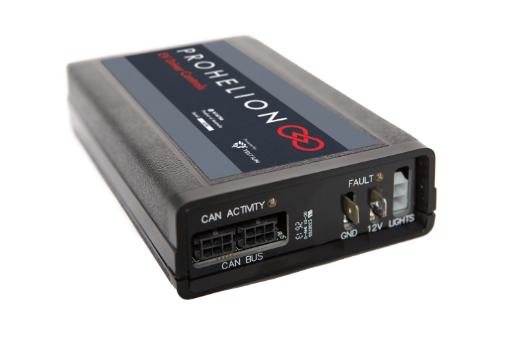

Prohelion EV Driver Controls

Prohelion's EV Driver Controls is the device responsible for controlling the motor controllers. Details can be found in the user's manual. You'll notice that the manual does not specify the device's CAN broadcast messages. This is because, like the BMS, this device is programmable. The current settings define the following CAN frames:
ID Info
Frame ID: Base address + 0x0
| Variable | Bytes | Type | Description |
|---|---|---|---|
| Tritium ID | 0-3 | Uint32 | Device identifier |
| Serial Number | 4-7 | Uint32 | Device serial number, allocated at manufacture |
Drive
Frame ID: Base address + 0x1
| Variable | Bytes | Type | Description |
|---|---|---|---|
| Set point Motor Velocity | 0-3 | Float32 | Desired motor velocity set point in rpm |
| Set point Motor Current | 4-7 | Float32 | Desired motor current set point as a percentage of maximum current setting |
Power
Frame ID: Base address + 0x2
| Variable | Bytes | Type | Description |
|---|---|---|---|
| Reserved | 0-3 | - | - |
| Set point Bus Current | 4-7 | Float32 | Desired set point of current drawn from the bus by the controller as a percentage of absolute bus current limit |
Reset
Frame ID: Base address + 0x3
| Variable | Bytes | Type | Description |
|---|---|---|---|
| Unused | 0-3 | - | - |
| Unused | 4-7 | - | - |
Switch
Frame ID: Base address + 0x5
| Variable | Bit(s) | Type | Description |
|---|---|---|---|
| Mode reverse | 0 | Bool | Car is in reverse mode if set |
| Mode neutral | 1 | Bool | Car is in neutral mode if set |
| Mode regen | 2 | Bool | Car is regenerating power from the motor if set |
| Mode drive | 3 | Bool | Car is in drive mode if set |
| Ignition Accessories | 4 | Bool | Ignition key is in the accessories position |
| Ignition Run | 5 | Bool | Ignition key is in the run position |
| Ignition Start | 6 | Bool | Ignition key is in the start position |
| Brake | 7 | Bool | Brake pedal is currently being pressed if set |
| Charge Port | 8 | Bool | Charge port is currently open if set; port must be closed for car to drive |
| Unused | 9-40 | - | - |
| Flags | 48-55 | Uint8 | Flags currently being reported by the Driver Controller (check the code for more details) |
| State | 56-63 | Uint8 | Latest state as being reported by the Driver Controller (check the code for more detail on valid states) |